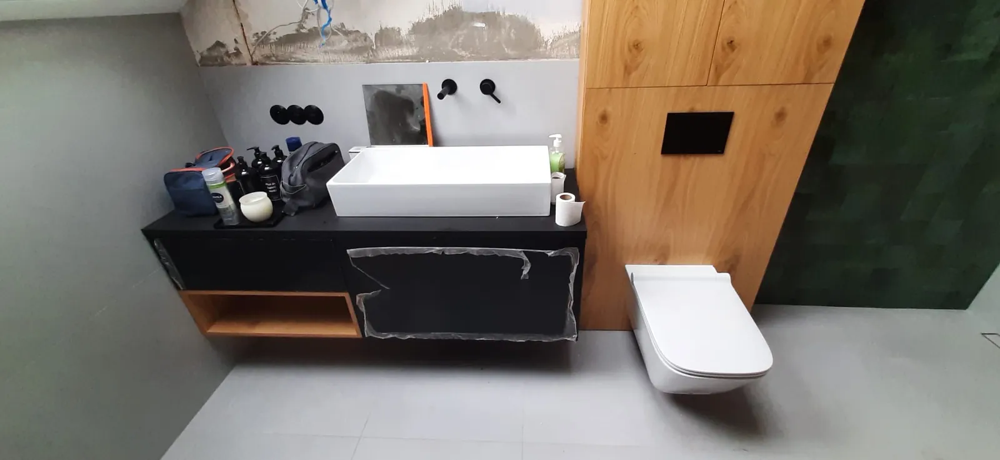
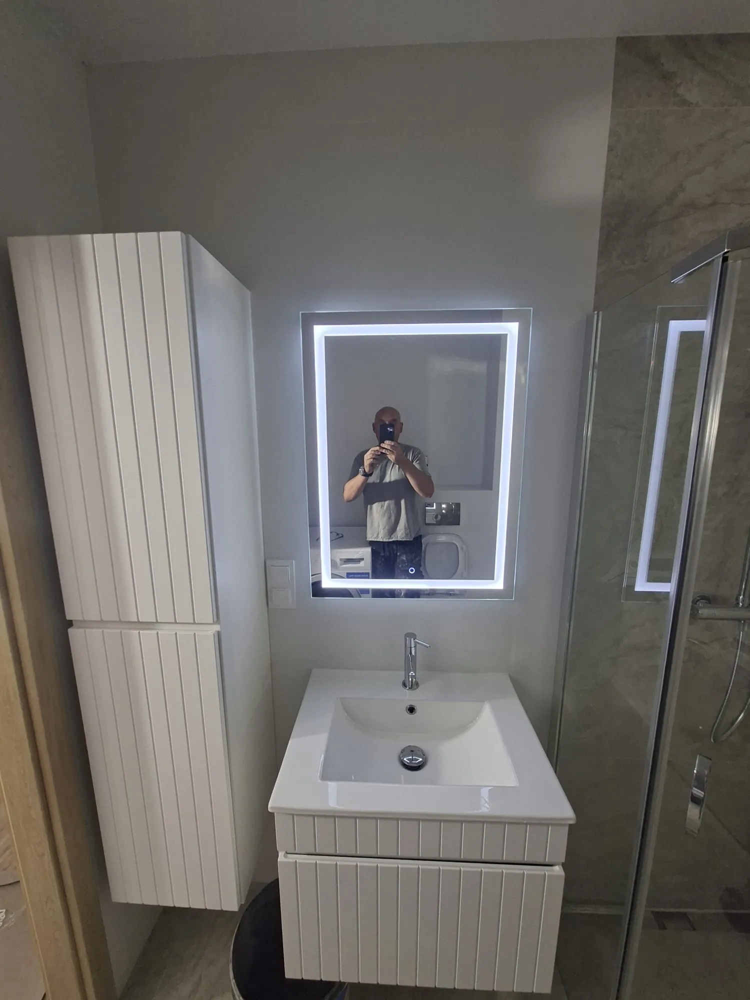
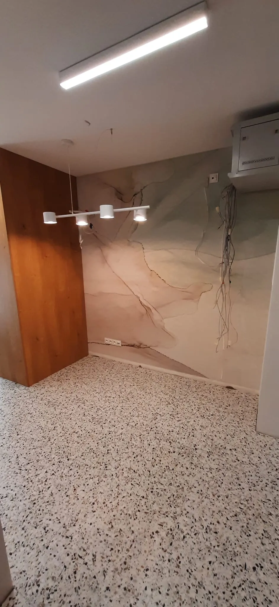
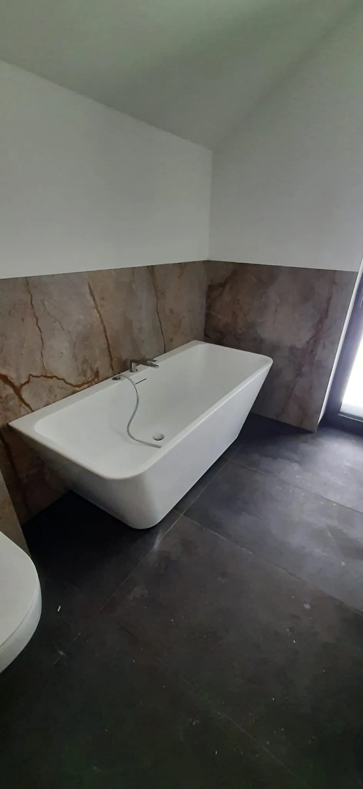
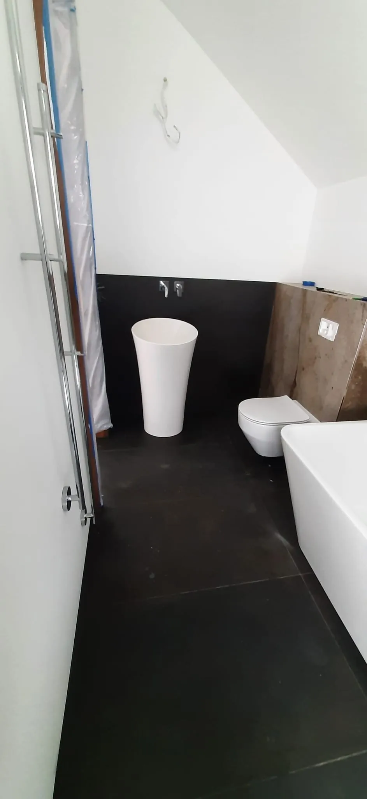
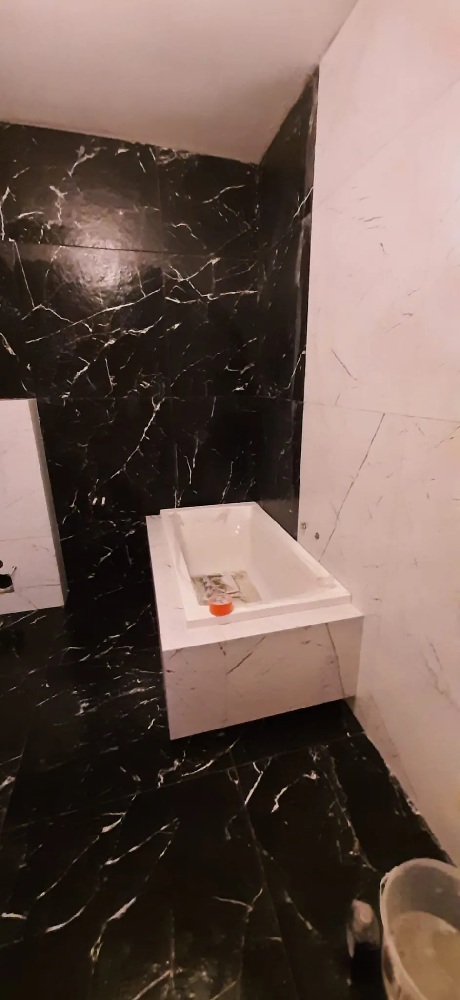

Remont łazienki kompleksowo — w jednych rękach.
Łazienka to pomieszczenie, gdzie pośpiech i brak koordynacji są widoczne długo po zakończeniu remontu. W STYL-BUD cały remont — od kucia po montaż — prowadzi jedna osoba.
Standardowy remont łazienki wygląda tak: firma remontowa koordynuje kilka ekip — hydraulik, glazurnik, elektryk, montażysta. Każdy pojawia się w innym tygodniu, każdy zna tylko swój etap. W STYL-BUD jest inaczej. Jeden wykonawca widzi całość — wie, gdzie za ścianą biegnie przewód elektryczny, zanim zacznie układać płytki. Wie, że hydroizolację trzeba dociągnąć dokładnie do tej wysokości, bo tam będzie prysznic. Takie rzeczy giną w komunikacji między ekipami. U mnie nie muszą.
Pełny zakres prac
Demontaż i przygotowanie
- Skucie starych płytek i demontaż armatury
- Ocena stanu podłoża i izolacji
- Przesunięcie lub wymiana podejść hydraulicznych
- Nowe odpływy, wymiana pionów jeśli konieczna
Hydroizolacja i przygotowanie
- Wielowarstwowe uszczelnienie podłogi
- Strefa prysznica lub wanny — naroża i dylatacje
- Przejścia instalacyjne i odpływy
- Materiały systemowe — bez skrótów
Glazurnictwo i spoinowanie
- Układ i symetria płytek — ustalony przed robotą
- Precyzyjne docinki: narożniki, otwory, nisze
- Fugi epoksydowe lub klasyczne — równe, czyste
- Formaty duże (60×120, 80×80) i mozaika
Zabudowy i biały montaż
- Zabudowy GK z niszami i półkami
- WC podwieszane, umywalka, prysznic / wanna
- Oświetlenie LED, grzejnik drabinkowy
- Wentylacja mechaniczna i kratki
Standard wykonania — to odróżnia trwały remont od tymczasowego
Hydroizolacja — nigdy po, zawsze przed
Nie widać jej pod płytkami — ale to tu decyduje się, czy za kilka lat będziesz miał problem z wilgocią. Uszczelniam podłogę i strefę mokrą przed układaniem płytek. To standard, nie opcja.
Kolejność prac bez skrótów
Instalacje przed zabudowami. Hydroizolacja przed płytkami. Biały montaż na końcu. Każda zmiana kolejności to błąd, który wychodzi po kilku latach — i który kosztuje kolejny, drogi remont.
Glazurnictwo z poziomicą, nie na oko
Każdy rząd płytek kładziony z poziomicą i krzyżykami. Fugi równe, spoinowanie dokładne i czyste. Pęknięta fuga po roku to efekt złej technologii — nie pecha.
Jak przebiega remont pod klucz
Bezpłatna wycena
Przyjeżdżam, oglądam łazienkę, słucham o oczekiwaniach. Wycena jest bezpłatna. Dostajesz kosztorys z podziałem na etapy i materiały.
Umowa i harmonogram
Podpisujemy umowę z zakresem, terminem i ceną. Ustalamy datę startu i szacowany czas realizacji. Nic nie zaczyna się bez pisemnych ustaleń.
Realizacja z raportowaniem
Pracuję osobiście. Informuję o postępach — zdjęcia, status. Każdy etap (hydroizolacja, glazura, montaż) kończony jest przeglądem przed następnym.
Odbiór i gwarancja
Wspólny odbiór, protokół, gwarancja 24 miesiące na robociznę. W razie usterki — przyjeżdżam i naprawiam. Bez odsyłania do infolinii.
Najczęstsze pytania
Ile trwa remont łazienki pod klucz?
Co obejmuje remont pod klucz?
Czy mogę wybrać własne płytki i armaturę?
Czy robisz remonty w bloku z wielkiej płyty?
Czy wystawiasz gwarancję?
Realizacje — łazienki pod klucz





